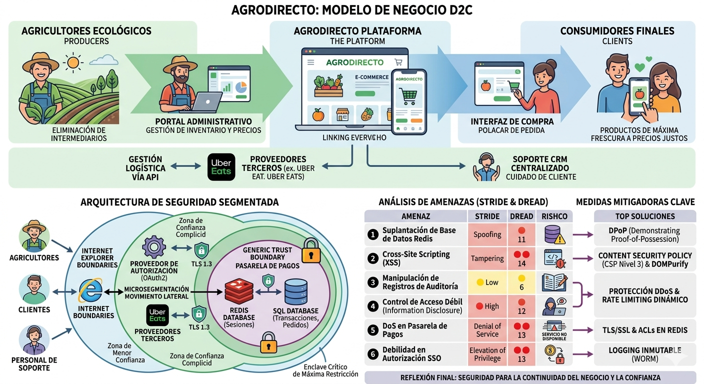
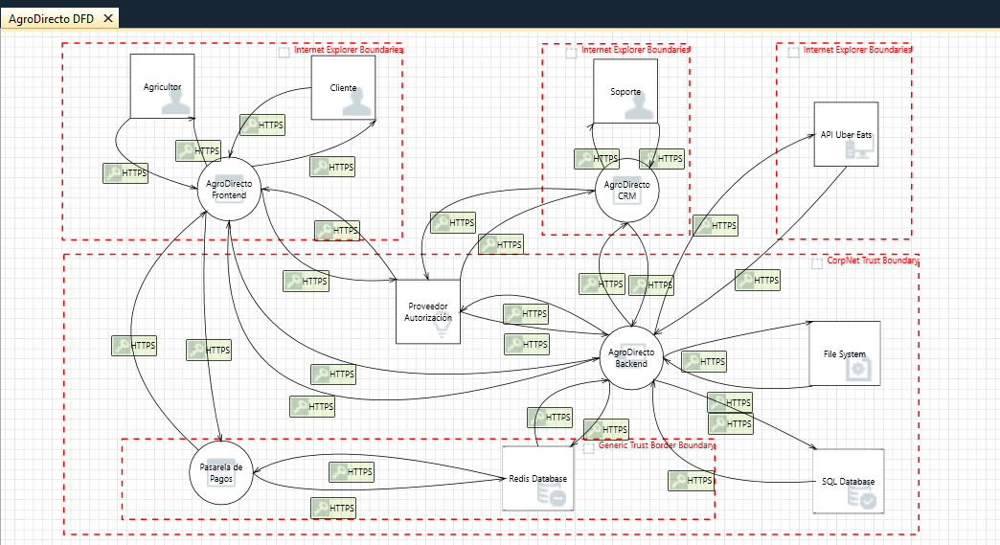

Este proyecto analiza la arquitectura de seguridad de AgroDirecto, una plataforma de comercio electrónico (e-commerce) especializada en conectar de forma directa a agricultores ecológicos con consumidores finales. El objetivo principal de la plataforma es eliminar intermediarios en la cadena de distribución para garantizar precios justos al productor y productos de máxima frescura al cliente final.

La infraestructura de AgroDirecto se organiza sobre un modelo Direct-to-Consumer (D2C) que integra tres pilares operacionales:
Dada la naturaleza crítica de la disponibilidad en las operaciones agrícolas (para evitar el deterioro de productos perecederos) y la sensibilidad de los datos financieros gestionados, la seguridad y la resiliencia del sistema representan pilares arquitectónicos fundamentales. Un incidente de seguridad no solo afecta a la confidencialidad e integridad de los datos, sino que compromete la disponibilidad del servicio, con impacto directo en la cadena de suministro y en el modelo económico de los agricultores.
El modelado de la arquitectura de AgroDirecto se apoya en un enfoque de microsegmentación que prioriza la disponibilidad del servicio y la protección de activos críticos. A través del análisis del flujo de datos del negocio, se han identificado los componentes, procesos, almacenes y límites de confianza que constituyen la superficie de ataque de la plataforma.
La arquitectura propuesta implementa los siguientes principios de seguridad:

Se definen cuatro entidades externas que simbolizan actores y sistemas fuera del perímetro organizacional:
Se especifican cinco procesos críticos que implementan la lógica de negocio:
Se definen tres almacenes de datos categorizados por su función operacional:
La totalidad de flujos entre componentes se implementan mediante canales HTTPS cifrados con TLS 1.3, garantizando confidencialidad e integridad en tránsito de datos.
La arquitectura establece tres zonas de confianza independientes que implementan segregación de responsabilidades:
El análisis de amenazas de AgroDirecto se basa en el método STRIDE (Spoofing, Tampering, Repudiation, Information Disclosure, Denial of Service, Elevation of Privilege), una metodología estándar en la industria para el análisis de riesgos en sistemas. Mediante la herramienta profesional Microsoft Threat Modeling Tool, se realizó un modelado exhaustivo de la arquitectura que resultó en la identificación de 281 amenazas potenciales.
De este conjunto de amenazas, se han seleccionado las 6 amenazas más críticas para un análisis en profundidad, aplicando criterios de impacto en el modelo de negocio, probabilidad de explotación y criticidad de los componentes afectados.
Nota: El mapeo completo de técnicas MITRE ATT&CK con anotaciones detalladas se encuentra disponible en el archivo agrodirecto_attack_navigator.json, que utiliza el formato estándar de capas de Attack Navigator para la visualización de técnicas de ataque en el contexto del sistema.
Se ha aplicado el framework DREAD para cuantificar el riesgo relativo de cada amenaza seleccionada:
La puntuación total de riesgo se calcula como suma de estos cinco factores, alcanzando un máximo de 15 puntos.
De las 281 amenazas identificadas por Microsoft Threat Modeling Tool, se han seleccionado las siguientes seis amenazas de máxima prioridad:
| Amenaza | D | R | E | A | D | Total/15 | Nivel |
|---|---|---|---|---|---|---|---|
| 1. Suplantación Redis | 3 | 2 | 2 | 3 | 1 | 11 | 🔴 Alto |
| 2. Cross-Site Scripting | 2 | 3 | 3 | 3 | 3 | 14 | 🔴🔴 Crítico |
| 3. Manipulación Auditoría | 1 | 1 | 1 | 2 | 1 | 6 | 🟡 Bajo |
| 4. Control Acceso Débil | 3 | 2 | 2 | 3 | 2 | 12 | 🔴 Alto |
| 5. DoS Pagos | 3 | 3 | 2 | 3 | 2 | 13 | 🔴🔴 Crítico |
| 6. Debilidad SSO | 3 | 2 | 3 | 3 | 2 | 13 | 🔴🔴 Crítico |
ID: 17 | Categoría STRIDE: Spoofing | Severidad: 🔴 Alto | DREAD: 11/15
Descripción Técnica:
Un atacante en posición de intermediario de red podría suplantar la identidad de la base de datos Redis, provocando la interceptación y modificación de datos transaccionales en tránsito. Esta vulnerabilidad corresponde a MITRE ATT&CK técnica T1557 (Adversary-in-the-Middle), que describe la capacidad de interceptar comunicaciones sin cifrar o con autenticación deficiente.
Componentes del Sistema Afectados:
Impacto Empresarial:
La suplantación de Redis podría comprometer la integridad de sesiones de usuario y datos de transacciones financieras, resultando en pérdida de confianza de los agricultores, alteración de registros de ventas y posible incumplimiento de normativas PCI-DSS.
Estado del Riesgo: ✅ Mitigado
Fundamentación de Mitigación: Este riesgo se ha neutralizado mediante la implementación de una arquitectura de Zero Trust que establece zonas de confianza diferenciadas. La base de datos Redis se encuentra aislada en un enclave seguro con acceso restringido exclusivamente a procesos autorizados, impidiendo la suplantación incluso en escenarios de compromiso de red.
ID: 1 | Categoría STRIDE: Tampering | Severidad: 🔴 Crítico | DREAD: 14/15
Descripción Técnica:
La aplicación web (AgroDirecto Frontend) es susceptible a ataques de inyección de código JavaScript malicioso en el contexto del navegador del cliente, resultado de una validación insuficiente de entradas de usuario. Esta vulnerabilidad se alinea con MITRE ATT&CK técnica T1059 (Command and Scripting Interpreter), permitiendo la ejecución arbitraria de scripts en el contexto de la sesión del usuario.
Componentes del Sistema Afectados:
Impacto Empresarial:
Un atacante podría capturar tokens de sesión de agricultores o clientes, robar credenciales, redirigir a pasarelas de pago fraudulentas o modificar información de pedidos. El impacto directo sería la erosión de la confianza en la plataforma, la exposición a responsabilidad legal por violación de RGPD y privacidad, y la pérdida económica de los usuarios.
Estado del Riesgo: ⏳ Parcialmente Mitigado
Fundamentación de Mitigación: Aunque se ha implementado un WAF (Web Application Firewall) como línea defensiva perimetral para detener payloads XSS conocidos, esta solución es incompleta debido a técnicas de evasión. Una corrección completa requeriría refactorización del código frontend y backend para sanitización de inputs en origen.
ID: 249 | Categoría STRIDE: Repudiation | Severidad: 🟡 Bajo | DREAD: 6/15
Descripción Técnica:
Entidades con bajo nivel de confianza podrían modificar, eliminar o falsificar registros de auditoría del sistema, imposibilitando la reconstrucción forense de eventos. Esta vulnerabilidad corresponde a MITRE ATT&CK técnica T1070 (Indicator Removal on Host), que describe la manipulación de evidencia digital para eludir responsabilidad.
Componentes del Sistema Afectados:
Impacto Empresarial:
La imposibilidad de realizar auditorías forenses fiables después de un incidente de seguridad deja a la organización en una posición vulnerable ante: (a) disputas financieras con clientes, (b) incumplimiento de normativas de retención de registros (RGPD, SOX), (c) incapacidad de detectar patrones de fraude repetitivos y (d) responsabilidad legal agravada.
Estado del Riesgo: ✅ Mitigado
Fundamentación de Mitigación: Se ha implementado una arquitectura de Zero Trust con enclave restringido que limita el acceso a escritura de logs exclusivamente a componentes de alta confianza (Pasarela de Pagos, Backend). Esta segregación reduce el riesgo de manipulación a escenarios donde el propio backend está comprometido, un vector de ataque de complejidad muy elevada.
ID: 18 | Categoría STRIDE: Information Disclosure | Severidad: 🔴 Alto | DREAD: 12/15
Descripción Técnica:
La base de datos Redis, que alberga datos sensibles de sesiones y transacciones, podría ser accesible a través de credenciales débiles o sin autenticación, permitiendo a un atacante leer información confidencial en la memoria. Esta vulnerabilidad se corresponde con MITRE ATT&CK técnica T1560 (Archive Collected Data) y T1041 (Exfiltration Over C2 Channel).
Componentes del Sistema Afectados:
Impacto Empresarial:
La exfiltración de datos sensibles resultaría en: (a) violación de privacidad de datos personales de usuarios (RGPD), (b) exposición de información competitiva (precios, volúmenes de ventas), (c) robo de credenciales que facilita escalación de privilegios, y (d) daño reputacional irreversible.
Estado del Riesgo: ✅ Mitigado
Fundamentación de Mitigación: Se han implementado zonas de confianza mediante segmentación de red que aísla Redis dentro de un enclave de máxima restricción. El acceso es exclusivamente a través de procesos autorizados (Pasarela de Pagos, Backend) con autenticación de cliente mediante certificados X.509, y se han habilitado ACLs a nivel de Redis 6.0+.
ID: 73 | Categoría STRIDE: Denial of Service | Severidad: 🔴 Crítico | DREAD: 13/15
Descripción Técnica:
La Pasarela de Pagos podría saturarse y detenerse su operación cuando enfrenta picos de tráfico no esperados, ya sea mediante ataques DDoS deliberados o cargas legítimas no previstas. Esta vulnerabilidad corresponde a MITRE ATT&CK técnica T1498 (Network Denial of Service), que describe ataques de consumo de recursos a nivel de aplicación.
Componentes del Sistema Afectados:
Impacto Empresarial:
Dado que AgroDirecto maneja productos perecederos con ciclos de venta de 24-72 horas, una caída de la Pasarela de Pagos genera un impacto en cascada: (a) detención de la venta de productos, (b) deterioro de mercancía no vendida, (c) pérdida económica directa para agricultores, (d) erosión irreversible de la confianza en la plataforma y (e) ventaja competitiva comprometida frente a competidores.
Estado del Riesgo: ⏳ No Iniciado
Fundamentación de Mitigación: Aunque la infraestructura actual incluye rate limiting básico en servidor, se carece de escalado dinámico debido a restricciones presupuestarias. La corrección requeriría inversión en infraestructura elástica (grupos de auto-escalado) y servicios de protección DDoS, con proyección de implementación en la próxima fase de desarrollo.
ID: 11 | Categoría STRIDE: Elevation of Privilege | Severidad: 🔴 Crítico | DREAD: 13/15
Descripción Técnica:
Las implementaciones de OAuth2 y Single Sign-On (SSO) en AgroDirecto son vulnerables a ataques de interceptación y reutilización de tokens de acceso. Un atacante podría capturar un token durante su tránsito en red no cifrada, en memoria del cliente, o mediante inyección de código XSS, y posteriormente reutilizarlo para ganar acceso no autorizado. Esta vulnerabilidad corresponde a MITRE ATT&CK técnica T1550 (Use Alternate Authentication Material).
Componentes del Sistema Afectados:
Impacto Empresarial:
Un atacante en posesión de un token robado podría: (a) suplantar la identidad de un usuario legítimo, (b) obtener privilegios administrativos si el token es de un administrador, (c) manipular precios globales de productos, (d) acceder a estados financieros y reportes de ventas, y (e) realizar transacciones fraudulentas. Este escenario representa el riesgo máximo de compromiso de confidencialidad y integridad.
Estado del Riesgo: ⏳ No Iniciado
Fundamentación de Mitigación: La corrección requeriría implementar OAuth2 con extensión DPoP (RFC 9449), que vincula criptográficamente cada token a la clave privada del cliente, imposibilitando su reutilización desde otro contexto. Adicionalmente, se requeriría rotación automática de tokens con TTL muy cortos (15 minutos). Este trabajo está actualmente en fase de especificación de requisitos.
A partir del análisis STRIDE y DREAD previamente realizado, se presenta un conjunto de medidas mitigadoras técnicas y procedimentales diseñadas específicamente para reducir el riesgo residual de las seis amenazas críticas identificadas. Cada medida se ha evaluado considerando su factibilidad técnica, coste de implementación y alineamiento con la arquitectura existente de AgroDirecto, procurando proporcionar soluciones realistas y alcanzables dentro de un horizonte temporal de 3-6 meses.
| ID | Amenaza | Medida de Mitigación | Tipo | Fundamentación |
|---|---|---|---|---|
| 17 | Suplantación de Base de Datos Redis | Implementar TLS/SSL para conexiones Redis con autenticación de cliente mediante certificados X.509. Además, habilitar ACLs (Access Control Lists) nativas de Redis 6.0+ para restringir operaciones por rol. | Técnica | Elimina la posibilidad de acceso no autenticado y la modificación de datos en tránsito. Los certificados digitales vinculan la identidad del cliente a su clave privada, imposibilitando la suplantación incluso si el atacante captura el tráfico. |
| 1 | Cross Site Scripting (XSS) | Implementación de una Content Security Policy (CSP) de nivel 3 con directivas script-src 'self' y desinfectado (sanitization) de todos los inputs en el backend mediante librerías como DOMPurify o OWASP Java Encoder. |
Técnica | Aunque el WAF actual filtra ataques conocidos, una CSP estricta previene la ejecución no autorizada de scripts inline, eliminando el riesgo residual incluso ante evasión de WAF. La sanitización en backend garantiza que los datos almacenados nunca contengan código malicioso. |
| 249 | Manipulación de Registros de Auditoría | Configurar un sistema de logging inmutable mediante un SIEM on-premise (por ejemplo, ELK Stack o Graylog) con retención extendida (>1 año) y almacenamiento en un repositorio WORM (Write Once Read Many) local o NAS con protección contra borrado. Implementar firmas digitales HMAC-SHA256 en cada entrada de log. | Procedimental | Crea una pista de auditoría criptográficamente vinculada a una timeline interna, imposibilitando alteraciones retroactivas. Cumple con requisitos de trazabilidad forense y puede usarse como evidencia en litigios. |
| 18 | Control de Acceso Débil a Recursos Críticos | Aplicar el Principio de Menor Privilegio (PoLP) mediante controles de acceso basados en roles (RBAC) en el sistema operativo y firewall, limitando el acceso a Redis solo a procesos y usuarios específicos. Implementar Redis Sentinel para failover automático y cifrado en reposo usando LUKS o BitLocker. | Técnica | Segmenta el acceso de modo que solo la Pasarela de Pagos y el Backend pueden leer y escribir en Redis. Incluso si un atacante compromete una aplicación cliente, no podrá acceder a datos de otros segmentos. El cifrado en reposo protege contra el acceso físico al almacenamiento. |
| 73 | Denegación de Servicio en Pasarela de Pagos | Desplegar clúster de servidores físicos o virtuales con balanceador de carga (por ejemplo, HAProxy o NGINX) configurado para escalar horizontalmente entre 2-10 instancias según CPU/red. Implementar firewall perimetral con reglas anti-DDoS y configurar rate limiting dinámico con límites por IP cliente (ej. 100 req/min por sesión autenticada). | Técnica | El escalado automático absorbe picos de tráfico legítimos e ilegítimos, manteniendo la disponibilidad. El firewall perimetral y el balanceador de carga proporcionan protección DDoS de capa 3/4. El rate limiting frena ataques de fuerza bruta sin ser agresivo con usuarios legítimos. |
| 11 | Debilidad en Autorización SSO | Implementar OAuth 2.0 con DPoP (Demonstrating Proof-of-Possession) según RFC 9449, donde cada token de acceso está criptográficamente ligado a la clave privada del cliente. Añadir rotación automática de tokens (TTL=15min) y refresh token binding. | Técnica | DPoP imposibilita reutilizar tokens interceptados desde otro cliente, pues el atacante carecería de la clave privada para firmar las peticiones. La rotación de tokens reduce la ventana de exposición en caso de compromiso. Cumple con estándares OWASP y NIST. |
El enfoque propuesto se fundamenta en los siguientes principios estratégicos:
Prioridad en Mitigaciones Técnicas sobre Compensatorias: Se ha privilegiado el remedio en origen (eliminación de vulnerabilidades) sobre medidas de detección y respuesta, bajo el supuesto de que AgroDirecto posee capacidad técnica y presupuestaria para implementar cambios arquitectónicos.
Alineamiento con Zero Trust: Las mitigaciones refuerzan una arquitectura de Zero Trust explícita, donde cada componente requiere autenticación y autorización granular, sin confiar en perímetros únicos.
Escalado Temporal Realista: Cada medida se ha acotado a ser implementable en un horizonte de 3-6 meses sin introducir interrupciones operacionales críticas.
Proporcionalidad Riesgo-Coste: Se han priorizado las seis amenazas según su puntuación DREAD, enfocándose primero en XSS (DREAD 14/15) y DoS (DREAD 13/15), que afectan la continuidad del negocio.
Este análisis permite trasladar conceptos teóricos a un escenario creíble de negocio, donde la seguridad no se limita a proteger activos técnicos, sino que también condiciona la continuidad del servicio, la confianza del usuario y la sostenibilidad operativa de la plataforma.
Del universo de 281 amenazas identificadas, las seis priorizadas muestran un panorama de riesgos con impacto técnico y empresarial claro. El riesgo más crítico, con DREAD 14/15, es el Cross-Site Scripting (XSS) en el frontend, por su capacidad para comprometer sesiones y facilitar el robo de credenciales o redirecciones fraudulentas. Le siguen la denegación de servicio en la pasarela de pagos y la debilidad en la autorización SSO, ambas con 13/15, por su potencial para interrumpir operaciones o permitir accesos indebidos.
Estos riesgos, además, pueden encadenarse. Un XSS inicial podría facilitar el compromiso de tokens de sesión y agravar el impacto sobre otros componentes sensibles. También destacan el control de acceso débil sobre Redis (12/15) y la suplantación de bases de datos (11/15) por su efecto sobre la confidencialidad e integridad de la información, mientras que la manipulación de registros de auditoría (6/15) sigue siendo relevante por su impacto en trazabilidad y cumplimiento.
La arquitectura de AgroDirecto se apoya en una microsegmentación con zonas de confianza diferenciadas, lo que refuerza la defensa en profundidad. Entre los elementos más críticos destacan la pasarela de pagos, aislada en un enclave de máxima restricción por su impacto directo en la operativa del negocio; la base de datos Redis y la SQL Database, por almacenar información sensible; y el proveedor de autorización, por concentrar funciones de identidad y acceso.
El frontend también representa un punto expuesto por su interacción directa con el usuario. A esto se suma la dependencia de servicios de terceros, como la API logística. En este contexto, la disponibilidad resulta clave, ya que una caída prolongada podría traducirse en pérdidas económicas inmediatas y fallos en la cadena de suministro.
Este análisis, aunque útil en su aplicación de STRIDE y DREAD, tiene límites propios de un modelado estático basado en un DFD. No cubre con el mismo nivel de detalle riesgos dinámicos, como vulnerabilidades en dependencias, ingeniería social o la capacidad real de detección y respuesta ante incidentes.
Como mejora, sería recomendable complementar este trabajo con penetration testing, ejercicios de red teaming, revisión de dependencias mediante SBOM y una evaluación más específica de riesgos asociados a terceros. También sería útil incorporar un proceso continuo de threat intelligence para adaptar el análisis a la evolución del entorno de amenazas y ajustar la infraestructura de forma proactiva. Estas mejoras no solo reducirían la superficie de ataque, sino que también alinearían AgroDirecto con estándares como NIST y OWASP.
En conjunto, el documento constituye una base útil para entender la exposición de AgroDirecto y priorizar medidas de mejora. Más allá del plano técnico, el trabajo refleja que la seguridad de la plataforma afecta de forma directa a quienes dependen de ella, por lo que el modelado de amenazas debe entenderse como una herramienta práctica para razonar riesgos y tomar decisiones con criterio.